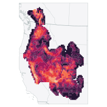

Kevin M. Neal, PhD
Applied AI & evolutionary biology
Engineer with a PhD from UCLA. My independent work explores biogeography, geometry, and machine learning.
Work & projects
open to exploreFortegraPrincipal Engineerwork
I work on applied AI at Fortegra, from experiments and prototypes to production software.
Spadefoot biogeographyClimate representation & geographical predictionresearch
I study spadefoot distributions using climate data and statistical models. The project includes a working manuscript, open results, and reproducible comparisons.

Six trianglesAn optimal packing, with replayable certificatesgeometry
A computer-assisted proof of the optimal packing of six unit equilateral triangles. Explore the geometry, read the preprint, or replay the exact certificates. Further Lean formalization is in progress.
LLM watermarkingStatistical signals in token choicesexplainer
An interactive explanation of how statistical signals can be embedded in ordinary token choices. Experiment with a small teaching model and watch evidence accumulate.